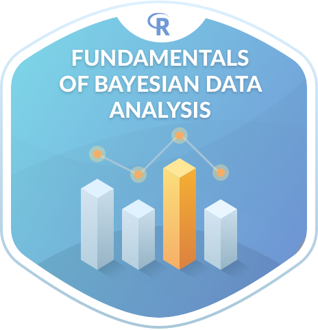
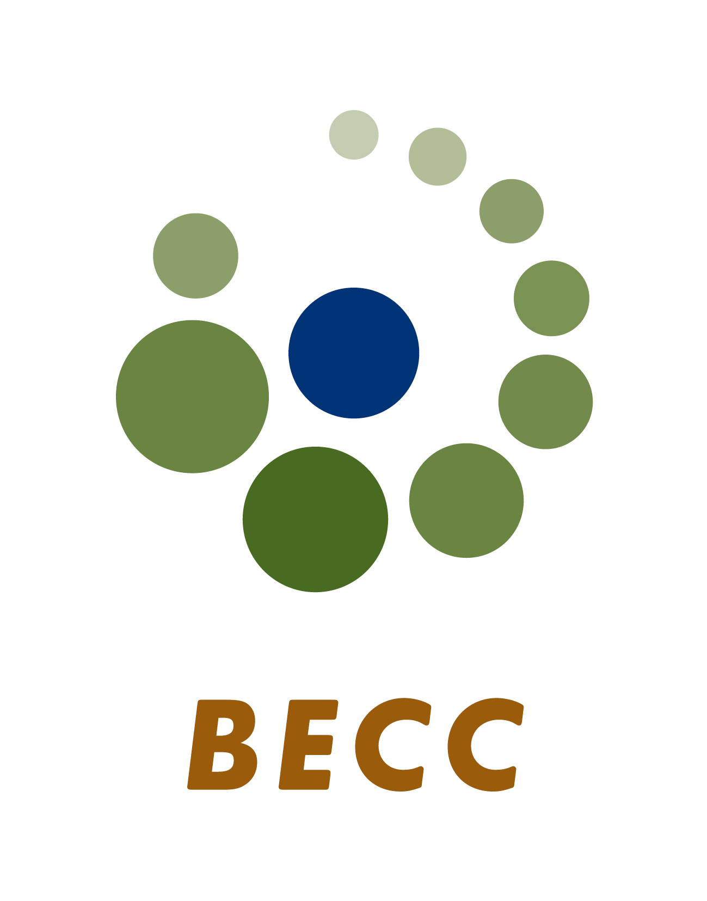

Thank you all who participated in Bayes@Lund 2019 and who made it such a successful and enjoyable event! :)
All best,
The Organizers
Rasmus Bååth, Alex Holmes, and Ullrika Sahlin
Below you will find the original webpage of Bayes@Lund 2019.
You are welcome to participate in the sixth edition of Bayes@Lund!
The purpose of this conference is to bring together researchers and professionals working with or interested in Bayesian methods. Bayes@Lund aims at being accessible to researchers with little experience of Bayesian methods while still being relevant to experienced practitioners. The focus is on how Bayesian methods are used in research and in the industry, what advantages Bayesian methods have over classical alternatives, and how the use and teaching of Bayesian methods can be encouraged. (see last year's conference for what to expect).
The conference will take place at Lund University, Sweden on the 7th of May 2019 starting at 9.00 and ending at 17.00. It will include contributed talks and invited presentations. Please register for the conference here.
The Program
The program is now finalized! For a list of all the speakers, and abstracts for all talks, do check out the book of abstracts:
Slides and info
Some of the speakers have agreed on sharing slides and information regarding their presentations which you'll find here:
- Visualisation for refining and communicating Bayesian analyses -- Robert Grant
- More info about Robert's book Data Visualization: charts, maps and interactive graphics: http://robertgrantstats.co.uk/dataviz-book
- Extending Bayes to Make Optimal Decisions -- Jonas Kristoffer Lindeløv
- Slides: https://github.com/bayesat/bayesat.github.io/blob/master/lund2019/slides/jonas_lindelov_bayes_at_lund_2019.pdf
- Notebook with code and explanation (highly reccomended!): https://lindeloev.github.io/utility-theory/
- Signal detection theory as bridge for Bayesian statistics and modelling -- Gerit Pfuhl
- Rich-man's Monte Carlo: Uncertainty Analysis in Excel -- Dmytro Perepolkin
- Bayesian vs. Frequentism for experimentalists -- Jakob Lavröd
- Bayesian Deep Learning Applications in Biomedicine -- Nikolay Oskolkov
- Bayesian inference of conformational ensembles from small-angle scattering data -- Wojciech Potrzebowski
- Automatic Learning of Summary Statistics for Approximate Bayesian Computation Using Deep Learning -- Samuel Wiqvist
- What cause successful learning in Bayesian methods? -- George Moroz
Invited Speaker: Maggie Lieu
Maggie is an astrophysics research fellow working at the European Space Agency in Madrid. Her main research involves modelling the mass distribution of clusters of galaxies to understand the nature of dark matter and dark energy in our Universe. Maggie's talk is Hierarchical models and their applications in astronomy; how hierarchical models can be a powerful tool for inference.
Invited Speaker: Robert Grant
Robert Grant is a medical statistician, turned freelance trainer, coach and writer in Bayesian models and data visualisation. His book Data Visualisation: charts maps and interactive graphics is published by CRC Press. His talk Visualisation for refining and communicating Bayesian analyses will review relevant general principles of effective visualisation, recent work on Bayesian workflow, and the role of interactive graphics.
Pre-conference Bayesian tutorial
Are you interested in Bayesian statistics and want to get up to speed? Then join the pre-conference Bayesian tutorial. This 3h tutorial will be given by Rasmus Bååth and will go through the fundamentals of Bayesian statistics using R. It will be based on the online course of the same name and requires no prior knowledge of Bayesian statistics but basic knowledge of the R programming language.
The tutorial is free of charge and takes place on the 6th of May 14.00 - 17.00 at Lund University, Sweden. Please register here.
